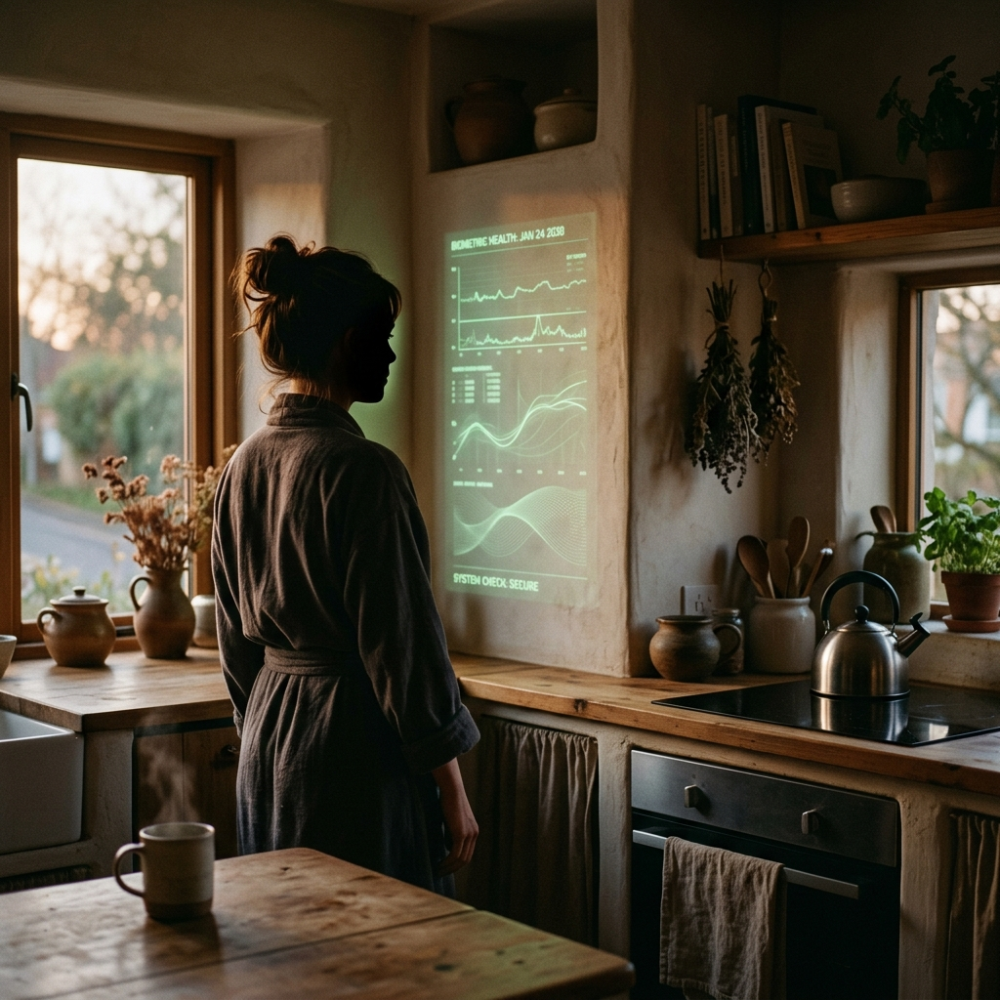
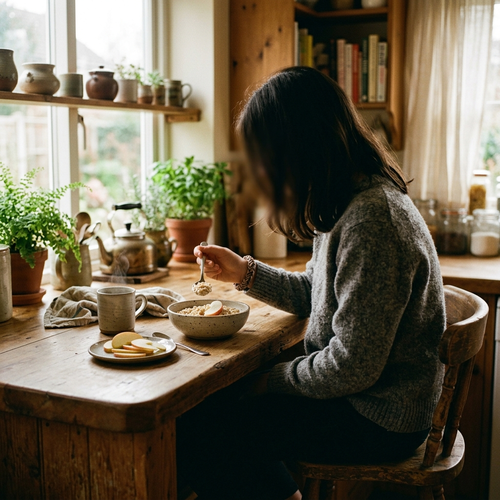
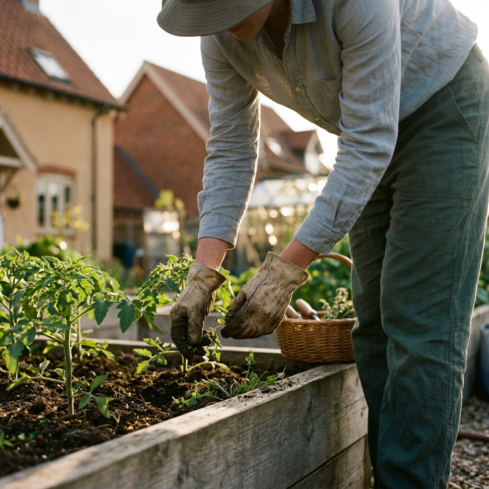
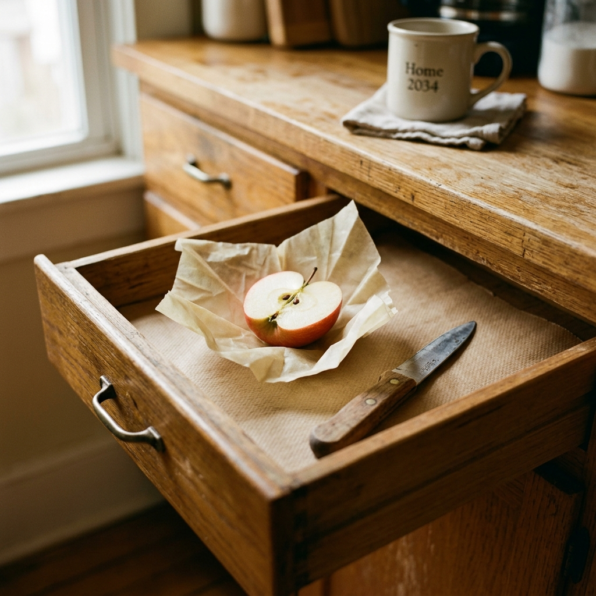
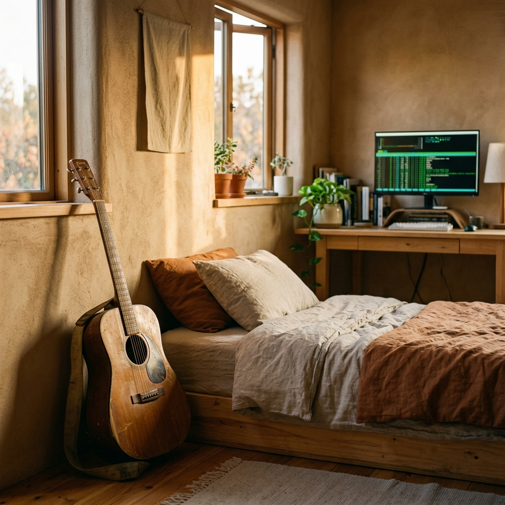
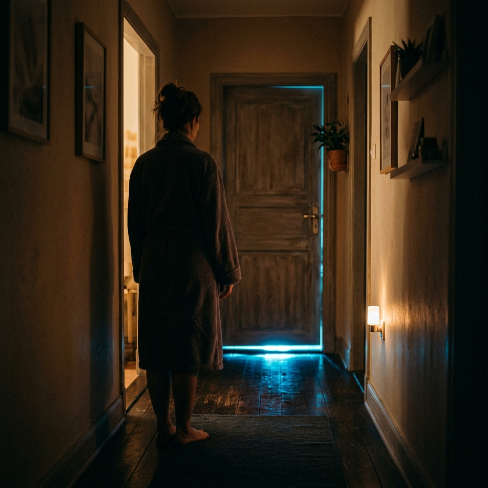

I.

At five forty-seven Sherri Holum was already at the kitchen wall, robe loose at the waist, hair still flat at the back from the pillow, the cup warming her palm before she had decided to drink from it, and the Display was on. The ok level was 74.3. It had been 74.3 at five forty-seven yesterday and 74.3 at five forty-seven the day before, which Sherri took as the cumulative effect of the lentil dinner Monday, the additional twenty-two minutes Drave had logged in the Wellness module on Tuesday, the Compact volunteer hour she had banked Sunday afternoon weeding the tomato bed in the community garden, and the steady current of Calen's morning biometrics, which the household sensor in the bathroom mirror had registered between six twelve and six fourteen daily for forty-one consecutive days. The margin was 2.3 above the threshold and 3.7 below the next band. The application sat secure inside that margin like a small clean dish inside a larger clean dish.
Orientation was in twenty days.
She opened the timeline. Portfolio review window was Thursday at two. The essay revision was due to the Academy intake portal by Friday at six. Compact quarterly was Thursday at eleven, which she had already pre-cleared with the orientation prep slot at one, so the day would hold, perhaps, if she moved the application revision into the morning and pushed kitchen inventory to Wednesday and let the Wellness check ride on the weekly aggregate, which she could allow herself because this line was holding, Drave's commission band was tracking at the Kessler-Norde median, the family was within Range, and her picture — even Calen's picture — was within range, in the green, soft band at the center of the chart Sherri had pinned to the top of the Display because looking at it was the first thing she did after the ok level.
Calen's picture: BMI 17.2, iron 11.4, sleep at six hours forty over the trailing seven, the sleep figure flagged twice this month with a gentle yellow advisory, addressed with a dim-cycle adjustment, bumped briefly to seven hours, settled back to the six forty the Display now seemed to accept as Calen's natural variant, the way a doctor learns a child runs slightly cool. The picture was fine. The picture was within range.
Drave was asleep with his mouth slightly open and one hand under the pillow and the other across his chest the way he had slept since the second year of the marriage, and Sherri absorbed the shape of him into the day's open inventory the way she osmosed weather, along with his blood pressure check due Thursday, his Compact attendance current, his commission band (steady, thank goodness) — love and data one motion fully fused, her hand autonomous already gliding toward coffee.
The east window framed the sky in gray-blue before-light, and the Bright was visible above the low roofs of the southern quarter — towers catching first sun, the windows glistening as if sweaty. The Bright was clear today, almost shimmering. Sherri saw it and saw the route through it: orientation, conditional, first year, secondary track, placement, life. Route open. Ok level. The cup was warm. The family was fine.
A phrase passed through her like a breeze. Number was number. It passed. She moved to the lunch tab. Wax paper was in the second drawer. The half-apple from last night still in there, wrapped, the cut surface beginning to brown along the edge. Sherri opened the nutrition module and logged the leftover into today's variable allotment and closed the drawer in her mind and then physically closed the drawer in the kitchen, and then the cup was at her mouth and the coffee was hot, and the day had started.
The Compact agenda loaded. His line refreshed. Calen's overnight biometrics ticked across the chart in the gentle pale green Sherri had selected three years ago from the Display's color palette. The Bright was lit now along the upper tier, tumescent. The kitchen tingled with cozy.
She had been seizing the day for years. Today was another grope.
II.

Calen straggled in at six twenty-eight in the gray shirt she had worn Tuesday and the leggings she had worn Wednesday, her hair pulled back with a fraying puffy-artisan elastic that lived on her wrist, and slid onto the counter stool without letting the stool register her weight. Sherri was at the cutting board with the apple already halved, the cut surface bright, the seeds in the compost cup, her hand reaching for the second knife the way her hand always reached for the second knife while her other hand had already turned the oatmeal heat down a quarter.
"Morning, my love."
"Morning."
Sherri set the half-apple on the small plate, sliced it into eight pieces and slid the plate across. The oatmeal bowl slid next to it, the cinnamon already on top, the milk Calen liked in the small ceramic pitcher Sherri had bought at the SLD-7 spring market in year two.
Calen ate. Spoon, oatmeal, spoon. She ate the way she did everything now, with a precision Sherri surveilled obliquely, trying to name it, parse the cognitive context; then she turned away to pour another coffee and as she angled the pour for peak froth, saw Calen lift a piece of apple and bite it as if she didn't want to get her lips wet, and chew it blandly, and set it back on the plate and lift the spoon again so it dangled empty above the bowl. The piece of apple had the imprint of precisely one bite in it. A lab mark.
Drave came through in the work pants, knotting his soft collar, the smell of shower-gel billowing around him.
"Cal, you sleep?"
"Yeah."
"That's my girl."
He kissed the top of Sherri's head on his way to the carafe. Sherri's hand came up and touched his jaw and felt the place he had missed shaving along the line of the chin and her thumb registered it and her mind logged it in the soft general inventory of the day and her thumb came away. He was telling Calen about a client at eleven, a kid Calen's age who played the cello, real wood, can you believe it, and Calen said cool and lifted another piece of apple and Sherri subconsicously counted her chewing. 15-17 mastications. Three pieces. Four pieces gone. Oatmeal half down. Did it constitute enough? Was she secretly vomiting? Sherri didn't think so. Yet.
"Compact at eleven," Sherri said. "Portfolio at two tomorrow."
"You got it."
He kissed Calen on the temple. The door closed.
Calen set the fork across the bowl and the spoon at the four o'clock position. She took the remaining four pieces of apple and stacked them, cut side to cut side, and reached past Sherri to the second drawer and pulled the strip of wax paper from the roll and wrapped the stacked pieces in two folds and set the wrapped pieces in the second drawer and slid the drawer closed.
"For later," she said.
"Sure, sweetheart."
Sherri opened the nutrition module on the Display above the counter and entered the morning input: oatmeal half portion, four apple pieces, milk one ounce, water as per. The leftover apple logged automatic into the variable allotment, pre-counted from the morning entry. The picture refreshed at 74.3.
Calen slid off the stool. She kissed Sherri's cheek the way she kissed everything now, lightly, with the bone of her cheek registering briefly against Sherri's, and went to her room for the schoolwork tab. Sherri stood at the counter. The half-apple was in the drawer. The picture was green. She would find the apple tonight.
She rinsed the knife. The kitchen supplied ambient sheen.
III.

The Compact met in the long room above the cooperative pharmacy, the room that had once been a real estate office and still had the soft beige carpet and the artificial planters in the corners, and Sherri arrived at ten fifty-three with the printed agenda and the soft-print Compact lanyard around her neck and the small folder of the quarterly civic-participation summary that she would file at the front desk and a pleasant warmth at the back of her throat that meant she was glad to be here. The Stewardship Circle of SLD-7 was thirty-eight households at full enrollment. Thirty-one had attended the spring quarterly. Sherri had attended thirty-one of the last thirty-two quarterlies, which the Compact recorded and which fed into the participation index, which fed into the ok level, and Sherri settled into that knowledge as she nodded to Marien Polk at the door and signed in on the tablet and took a seat in the second row by the aisle, same seat she had taken every quarter for four years.
Branda Halling opened the meeting at eleven exactly. Sherri loved Branda. Branda had organized the tomato bed and the school-zone advocacy filing and the senior-mobility shuttle integration, and Branda spoke with the cadence of a person who believed good was a thing one resembling *showing up*. The agenda moved briskly through the quarterly metrics — Collective Wellness up .2 to 7.41, garden yield tracking solid, mobility fleet uptime at 99.2 — Sherri felt each number land in her chest as a small confirmation that the place she had chosen for her family was a place that worked.
When Branda opened the floor for the *civic moment*, Sherri raised her hand and Branda nodded and Sherri stood.
"I just want to say," Sherri said, and she heard her voice take the shape it took when she was speaking from the part of herself that meant it, "I have been thinking about what this Compact has built. Eight years ago when Drave and I moved into the southern quarter I drove around the district on a Sunday afternoon and I saw the garden and I saw the shuttle stop and I saw the school zone signage and I thought, this is a place where my family can become itself. And we have. Calen is twenty days from her orientation. Drave's commission line is stable. We are above the threshold. We did this together, every one of us, every quarterly we showed up to, every hour we put in the garden, every meeting we logged. SLD-7 is what it is because we made it what it is. The southern quarter is the proof. The application is the proof. Thank you, Branda. Thank you all."
Spattered applause. A few sighs of agreement. Branda smiled and made a mental note. Marien Polk caught Sherri's eye on her way back to her seat and pressed her hand to her own chest in a way that meant she had felt it too. Sherri sat down. Her cheeks felt warm. Comfort deepened into something pristine. If asked, she would have called it belonging.
Garden subcommittee gave its report. School-zone signage refresh was approved. Lemon bars came out at eleven forty-five.
During the break, Joane Reyes-Albright came over with her plate. Joane's son Marcus was a year ahead of Calen at school. Marcus had applied to the Academy last cycle. Marcus was at the Academy now.
"Sherri, the application — how's Calen doing?"
"Wonderfully, thank you. The portfolio is almost there. The darned essay is in third revision. The extracurricular section, geez — we're framing the coding piece, the music coding she does, as a really specific kind of independent creative work, which it is! and the Academy intake portal is — well, you know the portal. We're getting there. Nudging the system into place."
"Marcus had the violin. Thank heavens. The violin was easy to enter."
"It's a different framing for sure. But Calen is so clear about what she wants to do, and the Academy values authentic articulation in the intake, so we are — we are confident."
"Of course you are. You're Sherri." Joane laughed. Joane meant it. Sherri laughed back and meant it.
Joane drifted to the lemon bars. Sherri stood by the planter with her own bar half-eaten in her hand. The Display was in her bag. She did not open it. She did not need to.
An enigmatic sentence formed then dispersed like cumulus. Calen codes alone in the dark and the form has no field for it. She shook her head until it went away. Branda was tapping the agenda again. The mobility fleet item was next. Sherri took her seat.
Meeting closed on schedule at twelve seventeen. Sherri signed out on the tablet. Participation logged.
IIII.

The comm pinged at twelve forty-one. Sherri was at the kitchen counter with the leftover lemon bar on a small plate and a cup of mint and the Display open to the application revision and the cursor in the extracurricular section. She tapped the call.
Drave's face came up against the gray of the Kessler & Norde meeting-room wall, his good shirt on, the small bracket-pin of the agency at the collar, his face flushed in the way it flushed when he was between meetings and pleased with himself.
"Babe. Hi. Two minutes. Just checking in."
"Hi, love. How's the day."
"Quintard family. The eleven o'clock. We're getting them to the place where they can see it as a lifestyle rebalancing, you know, zone-adjacent in SLD-9, the air filtration is honestly comparable, the schools are a tier down but the daughter is sixteen, she's almost out. The husband keeps saying we built this life and I'm sitting there with the comp printout and the equity-bridge offer and I'm just listening. That's the thing. They have to say it."
"You're good at that."
"It's the listening. Anyway. Commission's going to clear on this one if I can get the paperwork back by Friday. Solid mid-band. Wanted you to know."
"Mid-band is great, love."
"How was the Compact?"
"I spoke. Joane asked about Calen."
"And you said wonderful."
"I said wonderful."
"Okay. Kiss Cal for me. Love you."
"Love you."
The comm closed. Sherri sat at the counter with her hand still on the Display. The lemon bar hovered on the plate. The mint had cooled by a degree.
The Quintard family. The husband saying we built this life. Sherri's mind went where it went under that phrase — to a kitchen she had not been in, a kitchen with the morning light landing on it and the cup warming on the counter and the Display showing whatever number the Display had been showing for that family before it stopped showing the right number, and the husband at the wall in his robe at five forty-seven the way Sherri stood at the wall in her robe at five forty-seven, and the wife already knowing what the husband had not yet let himself know, and Drave in his good shirt at the meeting-room wall with the equity-bridge offer and the comp printout and the patient listening, doing the work he was good at, doing it well, doing it kindly. The Quintards would be in SLD-9 by the end of summer. The husband would say it had been the right move within a year. The wife had already said it. The daughter was sixteen, almost out. The line on Drave's commission held.
Four seconds. Mind landed in a crumpled anxious heap. Then post-workout endorphins smoothed the edges. She swiped up on her mood.
She loved Drave. She loved that his face had been flushed against the gray wall. She loved that he had called her between meetings to say mid-band. His steadiness was the structure under everything. His line was the reason the southern quarter was the southern quarter and the school zone was the school zone and the application was an application Calen could actually submit. His line was love made into a number that came in as sure as sunrise.
She turned back to the Display. The ok level, unchanged, still 74.3. The temperature of milk. The extracurricular cursor blinked. The application waited.
A tremor of sad: Drave will make commission on a family being moved out of their kitchen at five forty-seven. Nothing to do. It passed. She put her hand on the trackpad. She typed independent creative practitioner into the extracurricular field. Read the words. The words sat well on the screen. Plausible. And the form accepted them. Provisional. Awaiting institutional affiliation.
V.

The Academy intake portal was a clean white screen with the soft-blue Meridian logo at the top and a left-margin progress bar that showed seventy-eight percent complete and a small green confirmation tick beside each completed section: Biographical, Household Profile, Academic Record, Wellness Aggregate, Portfolio Uploads, Essay (in revision), References. The eighth section was Extracurricular and the bar around it was the pale gray of incomplete, and Sherri had been inside it for fourteen minutes when the Quintards left her mind and the form took it back.
The field was a structured one. There was a dropdown labeled Activity Category with the options Sherri had been through six times over the last week: Athletics; Performing Arts; Studio Arts; Civic / Volunteer; STEM Enrichment; Academic Olympiad; Cultural Heritage; Wellness Leadership; Other. Below the dropdown was a second field — Institutional Affiliation — which was required, and below that was a description box of two hundred and forty characters, and below that was a uploader for verifying documentation.
Sherri tried STEM Enrichment. The form opened the search filter for the regional registry of accredited enrichment providers, and she typed TidalCycles and live coding and algorave, in sequence, and the registry returned a single entry on the third attempt: Algorave Network, EU collective, non-accredited for North American intake purposes. Field rejected.
Sherri tried Performing Arts, sub-menu composition. The Institutional Affiliation field returned the soft red banner: Composition submissions require conservatory or accredited mentor affiliation.
She tried Studio Arts. The category dropdown kicked back: Studio Arts requires physical-medium documentation. For digital practice, see STEM Enrichment.
She sat back. Her hand was still on the trackpad. The cursor blinked in the description box. Navigating calmly capably. Doing what was necessary. The Display showed 74.3 in the small top-right corner where the ok level always sat, and the orientation countdown showed twenty days, and the application progress bar showed seventy-eight percent, and the Extracurricular field was the only thing standing between seventy-eight and ninety-four, after which the essay would push it to ninety-eight, after which the References would push it to one hundred, after which the submission window would open.
Down the hall, faintly, Calen's keys. Sherri heard them without registering she was hearing them. The keys went tk tk tk tk and paused and went tk tk tk and paused. The TidalCycles syntax was the score. The score was being written. The performance was for an audience Calen had not yet found.
Darn it. Fuck. She didn't like it when she swore even internally.
Sherri's mind cascade tipped: field, dropdown, rejection, Calen, keyboard, half-apple in wax, orientation in twenty days, hand-typing, hand-typing music, in 2051 of all times! Archival. gazooks give her a daughter with less capacity for eccentricity and she'd have lined up a suite of acceptances. tk tk tk, Joane and the violin that was easy, Calen, hmmm.
Sherri typed independent creative practice into the description box. She left the Institutional Affiliation field blank and clicked Save. The form returned the soft yellow warning: Section incomplete. Affiliation required for final submission. Section will accept draft save for fourteen days.
She clicked Accept. The progress bar held at seventy-eight percent. The Display showed 74.3.
The keys down the hall paused for a long moment. Then resumed. Tk tk tk tk.
Why was it so chilly in here? My daughter is doing the only thing she does that she chose for herself and she loves it, and the form has no field for it, and I am the one filling out the form. The cursor blinked in the saved-draft field. Orientation in twenty days. Essay revision due Friday.
Sherri stood without thinking. The keys continued. Tk tk tk. Pause. Tk.
Calen's door was closed. The hallway light was off. Sherri did not push the door. She went back to the Display and clicked the essay tab. The cursor moved into the second paragraph. She began.
VI.

At five eleven Sherri closed the Display. She did not minimize it. She did not put it to sleep. She closed the tab. The Display went slate-gray, the small Meridian Regional logo glowing faintly at the bottom right.
She sat at the counter. The west kitchen window at five eleven in May, now burnished with lateral sun, tangible rivers of it moving over floor to counter, over ceramic fruit bowl, gleaming cheerfully. Clean, her sure hand.
The Bright was visible above the southern roofs, the towers lit along their upper tiers, the line of light moving slowly down them the way it roamed every evening between five and six-thirty.
She made tea. She made it from the loose mint Drave had brought home from the Sunday market in March, which lived in the jar at the back of the spice shelf. She crushed the leaves into the strainer. She poured the water and watched the leaves turn.
She sat with the tea. The Display was closed. The Bright was lit. Calen's keys were going down the hall, slower now, with longer pauses between the runs. Tk tk. Long pause. Tk tk tk tk.
The ok level was a composite: financial-health-civic-environmental-developmental. The household had built it over eight years in the southern quarter and the four years of the Compact and the eleven years of Drave at Kessler & Norde and the fourteen years of Calen.
She thought about what the ok level was optimizing for, exactly. It seemed to her it might be perpetual rieness, a kind of song heard only by those in the suburbs. A notch mellowing above comfort.
Then the real answer arrived. It arrived complete, present, unspectacular, ordinary. Unsurprising. The ok level is optimizing for the continuation of the ok level. The people whose ok level continues are the people who continue, and the people whose ok level drops below seventy are the Quintards in SLD-9 by the end of summer. Calen's hands do the only thing the ok level cannot count. The ok level is the smooth, quiet machinery of here and now.
The mint had cooled a lot. Tepid. She drank it anyway.
VII.

Drave was asleep by ten thirty. Sherri loaded the dishwasher, wiped the counter, set the kettle for the morning, ran the soft cycle on the air filter, and at eleven seventeen passed Calen's door on her way to the bathroom and saw the blue.
The gap under the door was eight centimeters of carpet and a strip of light. The strip was a deep flickering blue with characters moving in it — the projector throwing TidalCycles syntax across the wall inside, and the wall's reflected light leaking under the door in characters too small for Sherri to read, only their movement, only the tk tk of the keys, only the flicker of the blue as new lines appeared.
She stopped in the hallway.
The hallway was the hallway. The Lake Michigan print Sherri had bought in the second year was at her shoulder. The thermostat read sixty-eight. The air filter ran on its soft cycle. Sherri stood at the gap in her robe.
The keys went tk tk tk. Pause. Tk tk tk tk. Pause. Tk. Run. The TidalCycles syntax was the score. The score was being written. The score was a music that had yet to sound. Calen sat in the dark with the projector throwing what she had typed onto the wall and her hands continuing to type and the room holding only the keys and the blue.
Sherri's chest hammered. Sand and wetwipes. Why think of that now? No field for it. No category. No participation index. The hand made friction, the wetness of the body, the hand, in the dark, typing music in 2051. Why bother? Sherri knew. Sure as she knew the joy of thhe gym or wlaking the dog or eating. Even if AI wrote everything in milliseconds, in a city where every surface generated its own text. Even then: the hand, the typing, the act itself made its own joy.
Sherri knew This is what Calen has that is hers. She thought of birds. The keys went tk tk. The blue flickering carpet.
Sherri raised her hand.
The hand stopped six inches from the door. The hand was Sherri's right hand, the hand that had sliced the half-apple in the morning, the hand that had touched Drave's unshaved jaw, the hand that had typed independent creative practice into the Extracurricular field, the hand that had clicked the Saturday community-garden sign-up at five fifty-eight. The hand was at six inches from Calen's door.
She did not knock.
She put her hand on the door, flat, palm against the wood, with no weight behind it. She held it there for one breath, two breaths, three. Calen's keys continued. Tk tk tk. The wood under her palm was cool. The strip of blue at her feet flickered. Sherri's hand was on the door and Calen was on the other side and the door was the door and the keys continued.
She took her hand off the door. She walked past it without stopping and did her water and her brushing and her face cream and got into bed beside Drave, and Drave shifted and put his hand on her hip the way he always did, and Sherri closed her eyes.
She did not sleep for a while. Then she did.
At five forty-seven Sherri Holum was already at the kitchen wall, robe loose at the waist, hair still flat at the back from the pillow, the cup warming her palm before she had decided to drink from it, and the Display was on. The ok level was 74.3. The margin was 2.3 above the threshold. The orientation was in nineteen days. The portfolio review window was at two. The essay revision was due Friday at six. Drave's commission band was tracking mid. The picture was within range.
The east window held the sky in a muted tungsten gray-blue of before-light. The Bright was visible above the southern quarter, towers beginning to drink the morning. The cup was warm. The kitchen tingled cozy.
Sherri's hand was on the Display.
The day was going to be ok.
74.3.